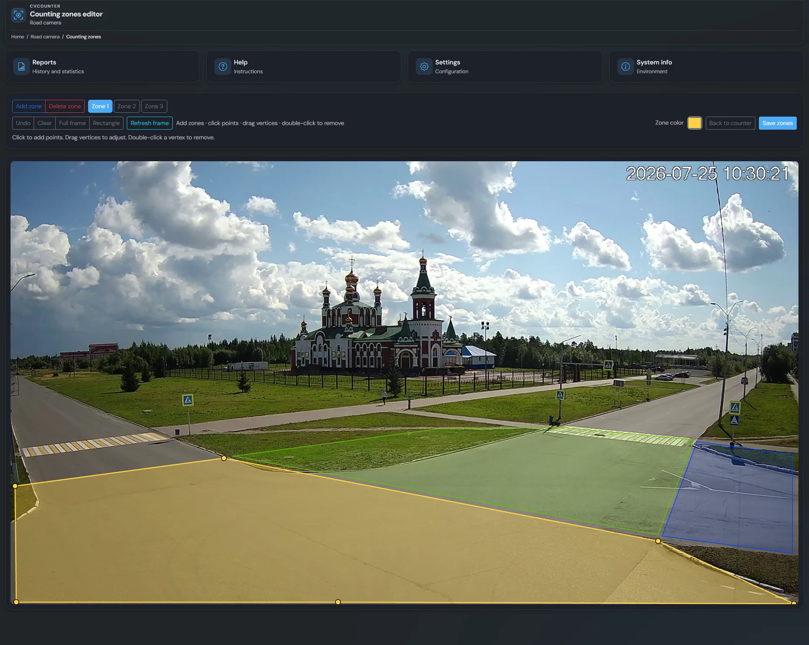
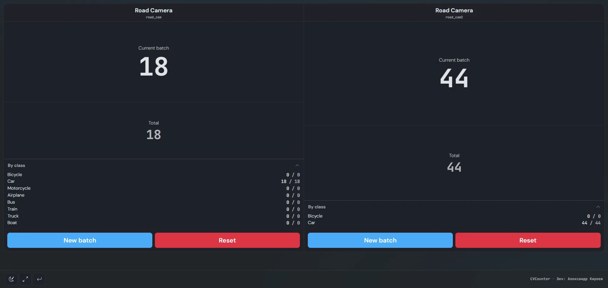
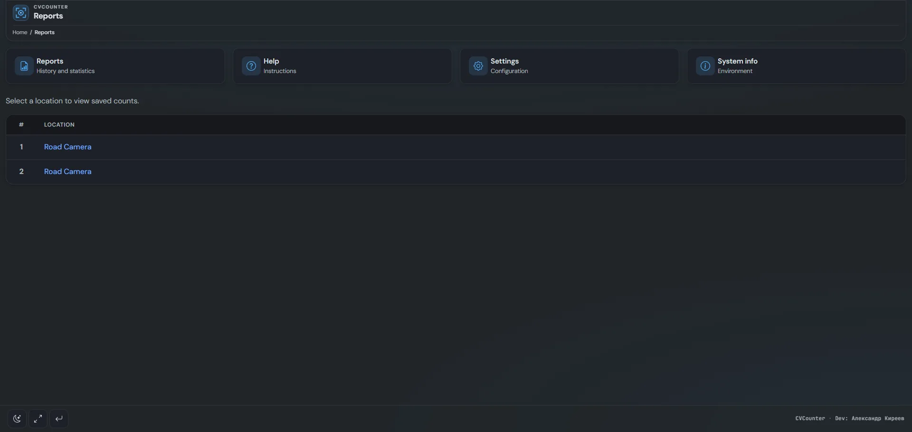

detect
Real-time detection
RTSP, webcam, or file. Server-side processing.
Object counting from cameras: detection, tracking, and zones — on the line, in the warehouse, or at the entrance. Clients only need a browser.
Camera counting without a heavy desktop client — line, warehouse, entrance, browser only.
RTSP, webcam, or file. Server-side processing.
IDs across frames, fewer double counts.
One or more polygons per frame.
Batch and totals per detection class.
Video, text, or multi-counter — for kiosks.
One detector registry, pick in config.
Common scenarios — dedicated pages for search intent.
Capture from camera, RTSP, or file.
The model finds objects and classes.
Stable IDs across frames.
Entering a zone increments counters.
Save and view in the web UI.
What you get as a product, not only a notebook with a model.
| Capability | YOLO script | CVCounter |
|---|---|---|
| Web UI & kiosk | Build it | Included |
| Counting zones | Manual code | UI editor |
| Multiple counters | From scratch | Multi view |
| Reports & batches | From scratch | Built-in |
| YOLO / OpenCV / ONNX | One stack | Backend registry |
Flask panel: counters, zones, reports.





Yes — conveyor, warehouse, shop floor. See the industrial counting page.
RTSP, webcam, and video files.
Preferred for real-time; CPU works depending on model and resolution.
Yes, AGPL-3.0. Source on GitHub.
Version 5.4.1. Source and Docker on GitHub.